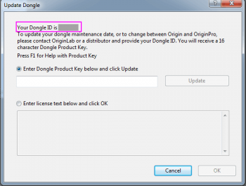

Dongle-Lizenz
Dongle-LIC
Seit Origin 2019 können Dongle parallel installiert werden.
Ihren Dongle aktivieren
Wenn Sie einen neuen Dongle gekauft haben
Sie erhalten von OriginLab oder dem jeweiligen Vertriebspartner einen eindeutigen Dongle. Die Dongle-ID ist auf dem Dongle aufgedruckt.
Sie können Origin dann mit der Seriennummer des Dongles installieren. Schließen Sie den Dongle am USB-Port an, um Origin zu verwenden.
Wenn Sie einen Dongle für Origin 2019 oder höher haben und Ihre Softwarepflege Sie für ein Upgrade auf die neueste Version berechtigt
- Installieren Sie die neue Version von Origin mit der Seriennummer des Dongles.
- Verbinden Sie den Dongle mit dem USB-Port.
- Klicken Sie doppelt auf das Symbol von Origin, um Origin zum ersten Mal zu starten. Wenn der Dialog Dongle aktualisieren geöffnet wird, fahren Sie mit den folgenden Schritten fort, um ein Upgrade für Ihren Dongle durchzuführen. Falls nicht, ist Ihr Dongle bereit für die neue Version.
- Notieren Sie sich die Dongle-ID oben im Dialog.

- Wenden Sie sich an OriginLab oder Ihren Vertriebspartner und und halten Sie Ihre Seriennummer und Dongle-ID bereit. Sie erhalten einen Produkzschlüssel für Ihren Dongle, der aus 16 Zeichen besteht.
- Starten Sie Origin. Falls der Dialog Dongle aktualisieren geschlossen ist, wählen Sie im Menü Hilfe: Lizenz aktivieren, um ihn zu öffnen.
- Bei ausgewählter Option Dongle-Produktschlüssel unten eingeben und auf Aktivieren klicken geben Sie Ihren Produktschlüssel ein. Klicken Sie auf Aktivieren. Beachten Sie, dass der Internetzugriff in den meisten Fällen nicht erforderlich ist.
- Der Lizenzierungsprozess wird nun im Hintergrund durchgeführt. Geschieht dies erfolgreich, erhalten Sie eine entsprechende Nachricht.
Wenn Sie das getan haben, können Sie diesen Dongle für eine Origin-Software, die mit der gleichen Seriennummer auf beliebigen anderen Computern installiert ist, verwenden, ohne den Dongle erneut aktivieren zu müssen.
 |
Beachten Sie, dass der Dongle der neuen Version noch immer die Verwendung der älteren Origin-Versionen bis zu 2019 zulässt. Die Verwendung von Origin 2019(b) kann jedoch den Dongle für Version 2020 oder höher deaktivieren. Daher empfehlen wir immer, bei der neuen Version zu bleiben. Falls Sie wirklich Origin 2019(b) verwenden müssen und eine Meldung sehen, die zur Aktivierung auffordert, wenn Sie später zur neuen Version zurückkehren, befolgen Sie bitte die obenstehenden Schritte zur Reaktivierung.
|
Ihr Origin registrieren
Die Registrierung ist nicht erforderlich, hilft dem Support-Team jedoch bei der Bereitstellung eines besseren Supports.
- Wählen Sie im Menü Hilfe: Online registrieren, um den Dialog Registrierung zu öffnen.
- klicken Sie auf die Schaltfläche Click here to Register on-line and receive your Registration ID.
- Ihr Webbrowser wird auf der Webseite von OriginLab geöffnet. Melden Sie sich bei Ihrem Konto an oder erstellen Sie sich eines.
- Es wird eine Registration ID für Sie erzeugt. Kopieren Sie diese ID und fügen Sie sie wieder in Origin ein.
Ihren Dongle nach Verlängerung der Softwarepflege aktualisieren
Nachdem die Verlängerung Ihrer Softwarepflege verarbeitet wurde, befolgen Sie die folgenden Schritte, um eine Ihren Dongle zu aktualisieren.
- Sie erhalten von OriginLab oder Ihrem Vertriebspartner einen neuen Produktschlüssel für den Dongle. .
- Verbinden Sie den Dongle mit dem USB-Port.
- Starten Sie Origin. Wählen Sie Hilfe: Lizenz aktivieren. Der Dialog Dongle aktualisieren wird geöffnet. Geben Sie den Produktschlüssel ein. Klicken Sie auf die Schaltfläche Aktualisieren. Beachten Sie, dass der Internetzugriff in den meisten Fällen nicht erforderlich ist.
- Nachdem der Aktivierungsvorgang beendet ist, wählen Sie Hilfe: Über Origin, um zu prüfen, ob das aktualisierte Ablaufdatum der Softwarepflege korrekt ist.
Hinweis: Falls Sie eine Dongle-Gruppenseriennummer für n Arbeitsplätze haben, haben Sie n Dongle. Sie müssen jeden Dongle, wie oben beschrieben, aktualisieren, nachdem Sie Ihre Softwarepflege verlängert haben.